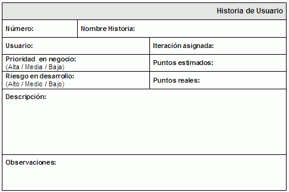

Programación eXtrema
- Introducción
- Valores
- Resultados XP
-
Prácticas XP
- El Juego de la Planificación
- Entregas Pequeñas
- Diseño Simple
- Desarrollo Dirigido por las Pruebas
- Refactorización
- Programación en Parejas
- Propiedad Colectiva del Código
- Integraciones Continuas
- Cliente In-Situ
- Estándares de Programación
- 40 Horas Por Semana
- Metáfora
- Comentarios respecto de las prácticas
- ¿Qué hay de eXtremo en la Programación eXtrema?
- Proceso XP
- Roles XP
- Para Saber Más
Introducción
XP (eXtreme Programming) es una metodología ágil, fundada por Kent Beck, centrada en potenciar las relaciones interpersonales como clave para el éxito en desarrollo de software, promoviendo el trabajo en equipo, preocupándose por el aprendizaje de los desarrolladores, y propiciando un buen clima de trabajo.
La Programación eXtrema trata de un cambio social. Trata de dejar los hábitos del pasado y hacer el trabajo lo mejor que podamos. Trata de eliminar las barreras que interfieren en la productividad. Trata de dejar el sentimiento adolescente de "sé mejor que nadie lo que tengo que hacer, y lo único que necesito es que me dejen a solas para ser el mejor". Trata de escribir código de calidad que realmente sea bueno para la aplicación.
Las buenas relaciones provocan buenos negocios. La productividad y la confianza están relacionadas con las relaciones humanas en nuestro entorno de trabajo, del mismo modo que nuestros conocimientos técnicos lo hacen con otras actividades del trabajo. Un desarrollador necesita tanto técnicas como buenas relaciones. XP trata ámbas areas. Por un lado, se centra en los roles del cliente, gestor y programador, proponiendo derechos y deberes para cada uno de éstos roles. Por otro lado, ofrece un conjunto de prácticas que cuidan y mejoran la calidad del código de forma continua.
XP se define como especialmente adecuada para proyectos con requisitos imprecisos y muy cambiantes, y donde existe un alto riesgo técnico. Siempre debemos tener en mente el lema de "La única constante en los proyecto de software es el cambio"
Los principios y prácticas son de sentido común pero llevadas al extremo, de ahí proviene su nombre. A continuación presentaremos las características esenciales de XP.
Valores
Los valores dentro de XP son la base de toda la metodología. Ofrece un conjunto de pilares que todo integrante debe tomar como propios. Están más relacionados con el "querer hacer" que con el "saber hacer". Los valores son: comunicación, simplicidad, retroalimentación y coraje.
Comunicación
Se requiere una comunicación fluida entre todos los participantes. Aunque parezca obvio para no requerir explicación, no siempre se produce. Sin comunicación se malgastan esfuerzos, ya sea mediante redundancia de trabajo, malinterpretación, etc...
El software se desarrolla tan rápido como lo permiten los canales de comunicación del proyecto. El cliente comunica los requisitos a los programadores. El programador comunica su interpretación de los requisitos al ordenador. El ordenador se comunica con los usuarios. El usuario comunica su satisfacción respecto al software al cliente.
La comunicación en XP es bidireccional, y se basa un sistema de continuas iteraciones de retroalimentación. El cliente le pregunta al usuario que es lo que quiere. El programador explicar las dificultades técnicas y pregunta para averiguar los requisitos. El ordenador notifica al programador de los errores de programación y los resultados de las pruebas.
Los informáticos somos seres sociales, y como tales, debemos saber comunicarnos. No basta con dominar un lenguaje de programación, debemos tener habilidades sociales para comunicarnos mediante el lenguaje natural. Puede que parte de culpa la tenga la educación recibida, donde a lo largo de nuestros estudios, pocas veces hemos trabajado en equipo y siempre se nos ha recordado que los trabajos eran individuales, penalizando aquellos parecidos o con ideas compartidas.
Independientemente del motivo de una pobre comunicación, como consecuencia tenemos sistemas con muchos fallos. La mala comunicación puede ocurrir entre programadores, entre el usuario y el equipo de desarrollo, entre los desarrolladores y el jefe del proyecto, etc...
En un proyecto XP, las reglas de comunicación son simples: todos los canales están abiertos a todas horas. El cliente es libre de hablar con los programadores. Los programadores hablan con el cliente y con los usuarios. Las comunicaciones sin restricciones mitigan el riesgo del proyecto reduciendo falsas expectativas. Todos los interesados saben que pueden esperar del resto del equipo.
Simplicidad
La mejor solución es la más simple. Cuanto más sencillas son las soluciones, más fáciles son de entender. Debemos tener siempre en mente el principio KISS (Keep It Simple, Stupid).
La solución más simple no quiere decir que sea la más fácil ni la más sencilla de implementar, ya que la simplicidad es un concepto abstracto. El código más simple puede ser muy difícil de conseguir a la primera. También cuesta ignorar el mañana y diseñar características que pueden ser geniales si se necesitasen en una iteración futura. Otras limitaciones como la presión temporal, o el escribir código impresionista (aquel que demuestra todos los conocimientos de un desarrollador, aunque se salga del alcance o motivación del problema) pueden limitar la simplicidad de la solución.
El principal problema radica, por un lado, en que no todos los integrantes del equipo tenemos los mismos conocimientos, y por otro, que esa característica que pensaste que se iba a necesitar mañana, puede que se necesite dentro de 3 meses o que no se llegue a necesitar nunca.
XP lleva la simplicidad al extremo con las siguientes guías prácticas:
- Haz la cosa más simple que pueda funcionar, implementando la primera idea que te venga en mente. Esto puede dar miedo. Confía en tu coraje y prueba la idea. Recuerda que el error es una parte importante del proceso creativo. Es improbable que esta primera idea sea la más simple, pero no podemos anticipar resultados hasta que lo hayamos probado.
- Representa los conceptos una sola vez - OAOO - (Once And Only Once). OAOO nos ayuda a mantener la agilidad reduciendo la cantidad de código del aplicativo. Si permitimos que la redundancia se apodere de nuestro sistema, emplearemos más y más tiempo en tareas de corrección que de creación. Cada vez que hacemos copy&paste, creamos un acoplamiento implícito. Sé valiente, evita el uso de ratón y Ctrl+C/Ctrl+V, y apuesta por la refactorización.
- No vas a necesitarlo YAGNI (You Aren't Going To Need It). Cuando sea posible resolver un problema inmediato sin introducir nuevas características, estaremos simplificando el problema.
- Elimina funcionalidad (o métodos) que ha dejado de utilizarse. En ocasiones añadimos un método al sistema por alguna buena razón, que posteriormente deja de utilizarse (dead code). En este punto, debemos eliminar este método. No necesitamos complejidad innecesaria. No hace falta mucho coraje, porque él código todavía existe en el repositorio del gestor de versiones. Siempre podemos volver a recuperarlo si posteriormente lo volvemos a necesitar.
Retroalimentación
Es bueno obtener retroalimentación. Los proyectos deberían retroalimentarse desde el principio, de forma frecuente, y por parte del cliente, del equipo de desarrollo, de los usuarios finales, de terceras personas, etc...
Ayuda a identificar los problemas desde el principio, tratar con aspectos desconocidos y clarificar aspectos, evitando que los problemas se pospongan al final del proyecto (cuando el tiempo premia y no podemos permitirnos sorpresas indeseadas).
La retroalimentación se puede conseguir a varios niveles. La entrega al cliente de forma continua de funcionalidades parciales que le aportan valor, de modo que el cliente opina de forma rápida y frecuente sobre la aplicación y no espera a una entrega final. Mediante esta rápida retroalimentación, cuando un cliente pide un cambio, se le muestra una solución, la cual puede ajustar. El cliente visualiza los requisitos o las correcciones implementadas en términos de semanas, y no de meses o años.
El valor de la retroalimentación real e inmediata no debe subestimarse. Una de las razones del éxito de la Web es la gran cantidad de retroalimentación estructurada e inmediata por parte de los usuarios. Los desarrollares observan los errores en tiempo real.
XP reduce los riesgos del proyecto llevando el desarrollo iterativo al extremo. La implicación del cliente no acaba en la fase de planificación, de modo que los errores de elicitación de requisitos se corrigen casi inmediatamente. La calidad interna del sistema se mantiene mediante programadores trabajando por parejas, esforzándose en la simplicidad. La ejecución de pruebas unitarias al integrar código nuevo en el sistema, provoca que cualquier problema introducido en el nuevo código aparezca inmediatamente. Las pruebas automáticas retroalimentan a todo el equipo de cómo el sistema está cumpliendo las expectativas previstas.
Coraje
Para afrontar los cambios se necesita ser valiente. Para adoptar XP necesitarás coraje.
Necesitarás refactorizar el código (modificar código que funciona, ¿para qué?), programar para hoy y no para mañana, escribir antes la pruebas que el código, trabajar con un compañero que te puede criticar, escribir código que cualquiera puede modificar, simplificar una solución compleja (quizás tan compleja que no la entienda), completar un caso de prueba para cubrir todas las posibilidades, etc...
¿Estoy motivado para tener coraje? La motivación se consigue mediante el interés, el miedo o la confianza. XP ayuda a que crezca la confianza exponiendo a los integrantes a pequeños pero continuos éxitos.
Superaremos el miedo, la incertidumbre y las dudas mediante el coraje apoyado en los otros 3 valores. Un sistema simple es más dificir de romper que uno complejo. La retroalimentación rápida y en diferentes niveles nos permite darnos cuenta rápidamente cuando un cambio falla. Las comunicaciones abiertas significan que no vamos a afrontar nuestros miedos a solas, nuestros compañeros de equipo nos ayudaran. Solo tenemos que hablar de lo que nos asusta de una forma abierta.
El coraje es una espada de doble filo. Necesitamos superar nuestros miedos, pero demasiado coraje puede ser peligroso. XP fomenta pequeños pasos para promover el coraje. Los integrantes del equipo observan un flujo continuo de fallos y errores, que evita el exceso de coraje pero mantiene un nivel acorde.
Resultados XP
A continuación se muestran los resultados agrupados por fases de desarrollo:
| Requisitos | Diseño |
|---|---|
|
|
| Implementación | Pruebas |
| Gestión de Proyectos | Gestión y Configuración del Cambio |
|
Las Historias de Usuario
Las historias de usuario (User Story) son la técnica utilizada en XP para especificar los requisitos del software. Se trata de tarjetas/cuartillas de papel (www.xprogramming.com/xpmag/story_and_task_cards.htm) en las cuales el cliente describe brevemente las características que el sistema debe poseer, sean requisitos funcionales o no funcionales, incluso para crear documentación.
Las rellenan los clientes con sus propias palabras, aunque los desarrolladores suelen escribir lo que el cliente les dicta. Cada historia de usuario se captura de forma separada. El tratamiento de las historias de usuario es muy dinámico y flexible, en cualquier momento pueden romperse, reemplazarse por otras más específicas o generales, añadirse nuevas o ser modificadas. Cada historia de usuario es lo suficientemente comprensible y delimitada para que los programadores puedan implementarla en unas semanas.
Respecto de la información contenida en la historia de usuario, existen varias plantillas sugeridas pero no existe un consenso al respecto. En muchos casos sólo se propone utilizar un nombre y una descripción, una estimación de esfuerzo en días (que puede ser "desconocida"), y un importancia relativa (sinónimos de "obligado", "debería hacerse", "podría hacerse", "deseo", etc...).
Se adjunta una posible plantilla (formato OpenOffice): Plantilla para Historia de Usuario

Tarjetas CRC
Las tarjetas CRC (Clase, Responsabilidad, Colaboración) ofrecen un mecanismo sencillo pero efectivo para enfocar un diseño que involucra a varios participantes de un equipo. Tal como veremos más adelante, XP promueve el desarrollo colaborativo, y aquí las tarjetas CRC son una herramienta muy útil.
Se comienza la sesión de diseño con un montón de tarjetas en blanco, ya sean cuartillas de cartulina o un folio doblado en 2 veces. Cada cartulina representa un objeto del sistema, y se escribe en ella el nombre del objeto en la cabecera, las responsabilidades en la parte inferior izquierda y las clases de colaboración a la derecha.
La sesión comienza con una historia de usuario, y cada miembro del equipo con un número de tarjetas. El equipo conversa sobre el escenario, y el miembro responsable de la tarjeta se responsabiliza de guiar dicha historia. El detalle de las tarjetas cambia como resultado de la discusión, hasta que se identifican un conjunto de clases, responsabilidad y las colaboraciones asociadas que permitirán ejecutar el escenario requerido.
En una sesión CRC de XP, no se produce un diseño formal, pero el grupo se lleva una idea del como el sistema implementará la funcionalidad requerida.
Prácticas XP
A partir de los valores explicados anteriormente, se definen una serie de prácticas (12). También se conocen como las Best Practices que permitirán adoptar XP de un modo exitoso.
A continuación se muestran las prácticas, que pueden apoyarse en varias disciplinas, agrupados por fases de desarrollo:
La principal suposición que se realiza en XP es la posibilidad de disminuir la mítica curva exponencial del costo del cambio a lo largo del proyecto, lo suficiente para que el diseño evolutivo funcione. XP apuesta por un crecimiento lento del costo del cambio y con un comportamiento asintótico. Esto se consigue gracias a las tecnologías disponibles para ayudar en el desarrollo de software y a la aplicación disciplinada de las prácticas que describiremos a continuación.
El Juego de la Planificación
Es un espacio frecuente de comunicación entre el cliente y los programadores. El equipo técnico realiza una estimación del esfuerzo requerido para la implementación de las Historias de Usuario y los clientes deciden sobre el ámbito y tiempo de las entregas y de cada iteración.
Esta práctica se puede ilustrar como un juego, donde existen dos tipos de jugadores: cliente y programador. El Cliente (cualquiera que pueda tomar decisiones acerca de lo que debe realizar el sistema) establece la prioridad de cada historia de usuario, de acuerdo con el valor que aporta para el negocio. Los Desarrolladores (cualquier persona involucrada en la implementación del proyecto) estiman el esfuerzo asociado a cada historia de usuario. Se ordenan las historias de usuario según prioridad y esfuerzo, y se define el contenido de la entrega y/o iteración, apostando por enfrentar lo de más valor y riesgo cuanto antes.
Así pues, el objetivo de este juego es decidir el ámbito/alcance y las prioridades del proyecto y sus respectivas entregas. Además, nos va a permitir estimar el coste de las diferentes funcionalidades, así como planificar estas funcionalidades en entregas.
Este juego se realiza durante la planificación de la entrega, en la planificación de cada iteración y cuando sea necesario reconducir el proyecto.
El Juego en Detalle
El juego se divide en tres fases:
- Exploración: determina nuevas historias de usuario del sistema
- Compromiso: determina que funcionalidades se desarrollaran en una determinada entrega
- Ajuste (Steering): actualiza la planificación conforme el desarrollo progresa.
Estas 3 fases son iterativas y suelen interactuar entre si. Por ejemplo, si en la fase de Ajuste nos damos cuenta de que necesitamos nuevas historias de usuario, entonces se vuelve a jugar en la fase de Exploración para las nuevas historias necesarias, tras lo cual se realiza el Compromiso, y posteriormente se vuelve a revisar el Ajuste para producir una planificación revisada.
Exploración
Durante la fase de Exploración, el juego intenta ayudar al equipo a identificar que debería hacer el sistema. Para conseguir esto, esta etapa contiene 3 pasos/movimientos sobre las Historias de Usuario:
- Escribir. El Cliente empieza a hablar sobre lo que el sistema debe realizar. En algún momento, estas descripciones se escriben como historia de usuario (en cuartillas). Normalmente, las ideas iniciales se discuten mejor sobre pizarras antes de convertirlas en tarjetas.
- Estimar. Los Desarrolladores estiman cuanto tardarán en implementar la historia. Si los Desarrolladores no pueden estimar la historia, entonces pueden pedir aclaraciones o solicitar que la historia se divida (para facilitar su comprensión). En las planificaciones iniciales del proyecto (durante el juego de planificación inicial) normalmente sólo se intenta obtener una cifra aproximada. Más tarde (durante la planificación de la entrega detallada), se requerirá mayor nivel de detalle al describir las historias.
- Dividir. Los usuarios normalmente no son conscientes de cuanto trabajo implica una cierta funcionalidad del sistema. A su vez, los desarrolladores normalmente no entregan lo que el cliente quiere. Como resultado, las historias de usuario pueden variar en tamaño y complejidad. Las historias de usuario necesitan refinarse, pero las historias de usuario grandes (en términos de complejidad o duración) necesitan partirse en historias de usuario más pequeñas (y menos complejas). Como regla general, ninguna historia de usuario puede ser tan grande que ninguna pareja de programadores sea capaz de completarla dentro de una iteración.
¿Como se realizan las estimaciones?
Respecto a las estimaciones, citar que se trata de una actividad bastante difícil y con tendencia a ser errónea. XP recomienda estimar en "Tiempo Ideal de Ingeniería" (IET), compuesto de "Día Ideal de Ingeniería" (IED). Un IED es la cantidad de desarrollo que se puede conseguir en un único día por un desarrollador medio sin interrupciones ni dependencias. En la fase de Compromiso, en el paso de "fijar la velocidad del proyecto", se contempla que no existe un día ideal, que un programador tiene reuniones, proyectos previos, necesidades de otros programadores, etc... lo cual le interrumpirá. Por esto, el tiempo necesario para producir un IED puede que se asocia al trabajo de un media persona durante una semana. Conforme el proyecto progresa, quizás necesitemos revisar este ratio entre ideal y real.
Las estimaciones de esfuerzo asociado a la implementación de las historias la establecen los programadores utilizando como medida el punto. Un punto equivale a una semana ideal de programación. Las historias generalmente valen de 1 a 3 puntos. Por otra parte, el equipo de desarrollo mantiene un registro de la velocidad del proyecto, establecida en puntos por iteración, basándose principalmente en la suma de puntos correspondientes a las historias de usuario que fueron terminadas en la última iteración.
La planificación se puede realizar basándose en el tiempo o el alcance. La velocidad del proyecto se utiliza para establecer cuántas historias se pueden implementar antes de una fecha determinada o cuánto tiempo se tardará en implementar un conjunto de historias.
- Al planificar por tiempo, se multiplica el número de iteraciones por la velocidad del proyecto, determinándose cuántos puntos se pueden completar.
- Al planificar según alcance del sistema, se divide la suma de puntos de las historias de usuario seleccionadas entre la velocidad del proyecto, obteniendo el número de iteraciones necesarias para su implementación.
Compromiso
Durante esta etapa del juego, el Cliente debe identificar que habrá/sucederá en la siguiente iteración y cuando será la siguiente entrega. Por su parte, los Desarrolladores deben llegar a un compromiso de aceptar la duración y el contenido de la entrega. Si esta situación no se puede alcanzar, entonces o bien se modifica la fecha de la entrega, o se altera el contenido de la misma.
Los pasos que se realiza para alcanzar el acuerdo son:
- Ordenar por Valor. El Cliente ordena las historias de usuario en tres montones. Estos montones representan las historias con prioridades alta (obligatorias/must have), media (deberían hacerse/should have) y baja (pueden aportar valor/nice to have). Desde el punto de vista del Cliente, las historias del montón de prioridad alta son más importantes que el resto. Por lo tanto, el equipo se centrará primero en este montón, ya que serán las que aporten mayor valor al negocio.
- Ordenar por Riesgo. Las historias de usuarios se reordenan en otros 3 montones, los cuales representan un riesgo alto (no se pueden estimar), medio (estimación razonable) y bajo (estimación fiable). Estos montones nos permiten averiguar las historias de usuario que el Cliente considera que tienen una prioridad alta y que los Desarrolladores han afrontado la estimación con certeza (una base sólida para realizar una estimación bien fundada). El resultado de esto es que el juego de la planificación quizás deba volver a la etapa de Exploración para intentar aclarar algunos aspectos relativos a la estimación de las historias de usuario. Algunas historias pueden dejarse para investigarse posteriormente una vez haya terminado el juego.
-
Elegir Alcance. El Cliente debe elegir el conjunto final de historias de usuario que formaran parte de la siguiente iteración/entrega. La única restricción respecto a lo que compone una entrega es que la primera entrega debería estar completa en términos de uso (aunque con una funcionalidad muy limitada) y que cada entrega posterior debe añadir algo que aporte valor al Cliente (para que se considere una entrega).DestacarNo todas las iteraciones tienen como resultado una entrega
- Fijar la Velocidad del Proyecto. Este paso mapea la Unidad Ideal de Ingeniería (IDU) con la realidad y toma en cuenta la cantidad de tiempo que los desarrolladores realmente son productivos, su experiencia, etc... Ofrece un modo de comparar periodos estimados idealmente con tiempo real restante.
Esta etapa se realiza de forma secuencial, con el Cliente ordenando la importancia relativa de las diferentes historias de usuario. A continuación, los Desarrolladores determinan sobre las historias importantes que riesgo conllevan. Finalmente, el Cliente decidirá qué historias formaran parte de una entrega particular (o entregas). La realidad es que se trata de un proceso iterativo, donde el Cliente revisa los montones conforme el juego avanza, influenciado por los Desarrolladores, la necesidad de dividir las historias y descubrir nuevas historias.
Ajuste
En el mundo real, la planificación siempre cambia; por una gran cantidad de razones, incluyendo:
- Requisitos que cambian
- Nuevos requisitos
- Prioridades que cambian
- Estimaciones incorrectas
- Recursos que cambian (desarrolladores salen y entran al proyecto/empresa con diferentes habilidades)
Todo esto significa que a lo largo de la vida de un proyecto, una planificación requiere revisiones frecuentes y extensas. De hecho, la planificación de un proyecto debe permitir obtener un histórico de cambios. Incluso dentro de una iteración XP, estos factores pueden convertirse en realidad y a lo largo de varias iteraciones. El juego de planificación XP reconoce explícitamente estos factores dentro de la etapa de Ajuste.
La idea de esta etapa es ajustar el proyecto y retomar la dirección correcta. Los pasos son:
- Planificación de Iteración. XP cita que solo debemos planificar en detalle la iteración actual. Por lo tanto, al inicio de cada iteración (cada 1-3 semanas), el Cliente planifica las Historias de Usuario a implementar, y los Desarrolladores planifican las tareas necesarias para implementar dichas historias.
- Recuperación de Proyecto. Conforme progresa la iteración, si los Desarrolladores se dan cuenta que van retrasados o adelantados respecto al calendario, pueden pedirle ayuda al Cliente para re-priorizar las historias de usuario a implementar.
- Identificar una nueva Historia. Si se identifica una nueva historia y se determina que es necesaria para la entrega actual, entonces se puede escribir, estimar y añadir a la iteración. Como consecuencia, las restantes historias necesitan revisarse y algunas serán descartadas para lograr cumplir la entrega.
- Reestimación de Proyecto. Si los desarrolladores consideran que la planificación se desvía de la realidad, entonces se puede replanificar la iteración completa, reestimar las historias de usuario, poner a cero la velocidad del proyecto y reconsiderar las implicaciones del calendario del proyecto.
Esta etapa suele realizarse en cualquier momento de la iteración (o al final). Sin embargo, las 2 primeras etapas ocurren al inicio de la iteración. Por lo tanto, el juego de la planificación como práctica XP se parte en trozos que se ejecutan en diferentes momentos den del ciclo de vida del proyecto.
Entregas Pequeñas
La idea es producir rápidamente versiones del sistema que sean operativas, aunque obviamente no cuenten con toda la funcionalidad pretendida para el sistema pero si que constituyan un resultado de valor para el negocio, del cual obtener retroalimentación por parte del cliente y del usuario final
Tan pronto como un conjunto de tareas aporten valor al cliente, se debe entregar. Aparte de la retroalimentación, estas entregas pequeñas facilitan las planificaciones a corto plazo, ya que un juego de planificación solo necesitara considerar unas pocas semanas (una entrega no debería tardar más 3 meses), y por lo tanto, el nivel de incertidumbre es menor respecto a si la duración es ilimitada.
Diseño Simple
Se debe diseñar la solución más simple que pueda funcionar y ser implementada en un momento determinado del proyecto. La complejidad innecesaria y el código extra deben ser eliminados inmediatamente, evitando los componentes generalizados.
Aunque pueda parecer que XP minoriza el diseño, realmente se integra dentro de la implementación. XP no obliga a diseñar el código de una determinada manera, ya que se puede hacer mediante la programación en parejas, el uso de tarjetas CRC, técnicas de Modelado Ágil, diagramas de flujo, etc... Esta decisión se sale fuera del ámbito de XP.
En cambio, XP promueve que el mejor diseño (el más simple) para el software es aquel que:
- Supera con éxito todas las pruebas.
- No tiene lógica duplicada.
- Refleja claramente la intención de implementación de los programadores, por lo cual es fácilmente comprensible por un programador externo.
- Tiene el menor número posible de clases y métodos.
Desarrollo Dirigido por las Pruebas
En XP las pruebas son la actividad dominante. Las pruebas se producen antes de escribir cualquier código, las pruebas de aceptación se generan tan pronto como se escriben los requisitos (mediante Historias de Usuario), las pruebas unitarias se producen antes de implementar el código, todo el código debe pasar todas las pruebas durante el desarrollo, etc... Este enfoque se conoce como Desarrollo Dirigido por las Pruebas (Test Driven Development).
Debemos ser capaces de escribir (y de hecho realmente escribir) las pruebas para un módulo antes de implementarlo. El argumento es que si no puedes escribir las pruebas antes de implementar el módulo, es que todavía no sabemos lo suficiente sobre el módulo. En este contexto de desarrollo evolutivo y de énfasis en pruebas, la automatización para apoyar esta actividad es crucial.
El resultado de escribir primero las pruebas es que tenemos:
- Un conjunto completo de pruebas para todo el código producido.
- El código más sencillo que pasa las pruebas.
- Una visión clara de lo que el código debería y no debería hacer.
- Una forma sencilla de comprobar que el código refactorizado no ha modificado la funcionalidad.
- Un modo excelente de "documentación" explicando que debería o no debería hacer un modulo.
Volviendo a las pruebas en si, existen 2 tipos de pruebas dentro del marco XP, las pruebas unitarias (escritas por los desarrolladores) y las pruebas de aceptación (desarrolladas por el cliente/s y los usuarios finales)
Pruebas Unitarias
El objetivo de las pruebas unitarias es validar la implementación de un componente respecto a su diseño inicial. Estas pruebas conforman la columna vertebral del enfoque TDD, siendo responsabilidad del desarrollador su creación.
Consisten en un conjunto de pruebas de granularidad fina que normalmente comprueban la funcionalidad de un componente a través de sus métodos y atributos públicos.
Las pruebas unitarias se pueden considerar en una combinación de pruebas de caja negra (la prueba unitaria valida la clase a través de sus entradas y sus salida, confirmando que se cumplen los requisitos especificados) y caja blanca (la prueba se basa en el interior de la clase, en el código implementado).
Dentro de XP, siempre se utiliza algún tipo de framework, y en concreto, dentro de la plataforma Java tenemos JUnit (junit.org), Cactus (jakarta.apache.org/cactus), HttpUnit (sourceforge.net/projects/httpunit), etc...
Pruebas de Aceptación
Un prueba de aceptación confirma que el sistema cumple los criterios de aceptación de acuerdo con los clientes finales. Comúnmente, este tipo de pruebas lo realiza el propio equipo de QA del cliente, o un equipo formado por el cliente y el usuario final.
Este tipo de pruebas, al estar relacionadas con la perspectiva del usuario final son más difíciles de probar. Sin embargo, dependiendo del tipo de aplicación, podemos utilizar algún framework específico como puede ser Fit (fit.c2.com y www.fitnesse.org).
Independientemente del tipo de prueba, todo el código debe pasar las pruebas antes de dar el código por bueno. Si se automatizan las pruebas unitarias, entonces es posible utilizar herramientas relacionada con las integraciones continuas que permitan al construir el proyecto, comprobar que se pasan todas las pruebas antes de que el código de suba al repositorio de código fuente. Las herramientas que soportan este comportamiento son CruiseControl para las integraciones continuas, Ant/Maven para la construcción, JUnit/Cactus/HttpUnit para las pruebas unitarias y CVS como repositorio de codigo fuente y control de versiones.
Refactorización
La refactorización es el arte de mejorar la estructura interna del código sin alterar su comportamiento externo. La refactorización es una actividad constante de reestructuración del código con el objetivo de remover duplicación de código, mejorar su legibilidad, simplificarlo y hacerlo más flexible para facilitar los posteriores cambios.
Aunque parezca poco productivo, ya que estamos modificando el sistema sin modificar su funcionalidad, tenemos 2 situaciones donde la refactorización es crítica:
- Antes de implementar una nueva funcionalidad. La refactorización en este punto va a facilitar añadir esta funcionalidad.
- Tras implementar la nueva funcionalidad. Ahora nos ayudará a simplificar la solución adoptada.
Por lo tanto, para mantener un diseño apropiado, es necesario realizar actividades de cuidado continuo durante el ciclo de vida del proyecto. De hecho, este cuidado continuo sobre el diseño es incluso más importante que el diseño inicial. Un concepto pobre al inicio puede ser corregido con esta actividad continua, pero sin ella, un buen diseño inicial se degradará.
El 25% del esfuerzo de un proyecto XP se consume en técnicas de refactorización, refinando de forma continua el diseño del sistema. Esta es la principal razón por la cual no se realiza un modelado intenso.
Esta dedicación implica que se le dedica más tiempo a refactorizar que a implementar, pero el resultado es que realizamos la solución más simple conteniendo el código más limpio y efectivo, con menor número de agujeros negros.
La refactorización requiere fe, confianza y coraje en lo que haces, pero para compensar tenemos las pruebas unitarias que nos ayudan a comprobar que tras la refactorización el sistema sigue funcionando.
Programación en Parejas
Toda la producción de código debe realizarse en parejas de programadores, es decir, dos programadores en un ordenador, con un teclado y un ratón, escriben todo el software del sistema.
Esto es posible porque los 2 desarrolladores juegan roles diferentes:
- Uno se centra en el método, clase o interfaz a implementar (este es el que tiene el teclado y el ratón)
- El otro se centra en temas más estratégicos como si la solución elegida se integra bien con el resto del sistema, cuales son las implicaciones, si existe una solución mejor, si las pruebas cubren todas las posibilidades, etc...
Estas parejas no deberían durar más de 2 o 3 días (o incluso 2 o 3 horas), dependiendo de la historia de usuario a implementar (o de la tarea). Durante este periodo, ambos programadores deben intercambiar los mandos, de modo que unas veces sea uno el que teclea y otro el que revisa el código y piensa en alternativas en pro de un diseño más sencillo.
Las parejas cambian conforme cambian las tareas y las historias. Por ejemplo, si un desarrollador esta trabajando en un área del código que no domina, debería formar pareja con un desarrollador experto en dicha área. Es importante destacar que nunca se deben unir 2 programadores jóvenes o inexpertos. Lo ideal es juntar a un experto con un programador en fase de aprendizaje.
Las principales ventajas de introducir este estilo de programación son:
- 2 cerebros son mejor que uno.
- El conocimiento del sistema se extiende entre todos los integrantes, mediante un aprendizaje cruzado, posibilitando la transferencia de conocimientos.
- Muchos errores son detectados conforme son introducidos en el código (inspecciones de código continuas), por consiguiente la tasa de errores del producto final es más baja, los diseños son mejores y el tamaño del código menor (continua discusión de ideas de los programadores).
- Mayor cobertura de las pruebas, ya que 2 personas ofrecerán 2 perspectivas distintas.
- La experiencia del equipo se extiende, mediante la mezcla de expertos y novatos, programadores senior y júnior.
- Los programadores conversan mejorando así el flujo de información y la dinámica del equipo.
- Los programadores disfrutan más su trabajo.
Dichos beneficios se consiguen después de varios meses de practicar la programación en parejas.
Propiedad Colectiva del Código
¿Quien debe cambiar una clase que necesita modificarse? Cualquier programador puede mejorar cualquier parte del código en cualquier momento, ya que el equipo entero es responsable de todo el código. Cada integrante tiene el derecho y el deber de realizar modificaciones sobre cualquier parte del sistema cada vez que identifica una oportunidad de mejorarlo.
La propiedad colectiva es todo lo contrario a decir que es el proyecto el propietario del código, ya que de este modo, nadie se hace responsable del código ni tiene la obligación de mejorarlo.
También es diferente a decir que cada desarrollador es responsable de su código (donde cada integrante solo se responsabiliza de su parte e ignora el resto). Esto conduce a una cultura de culpar e increpar a los compañeros. Uno de los objetivos de la propiedad colectiva es evitar la exclusividad y dependencia del código respecto a un desarrollador, lo que puede dar pie a opiniones del estilo de "es su código, es su problema".
Esta práctica motiva a todos a contribuir con nuevas ideas en todos los segmentos del sistema, evitando a la vez que algún programador sea imprescindible para realizar cambios en alguna porción de código, fomentando la agilidad en los cambios.
Por supuesto, no todos los integrantes tienen el mismo nivel de conocimiento de cada aspecto del sistema, pero si los desarrolladores son conscientes de su nivel de conocimiento en un área problemática, pueden programar en pareja con alguien que si tiene la experiencia y conocimientos requeridos.
Un equipo que no sea XP puede encontrar esta práctica problemática, ya que algunos desarrolladores mantienen relaciones de propiedad/pertenencia/posesión con el código, siempre con un ojo sobre "su" código. Ya sea por protegerlo, o por falta de confianza en el trabajo realizado, mantienen las afirmaciones de "mi código" y "vuestro código". ¡Esto es lo que debemos evitar!
Integraciones Continuas
Cada vez que se completa una tarea, el código resultante debe integrarse con la construcción actual. Para ello, el código debe pasar todas las pruebas unitarias (incluyendo las recién introducidas para probar la nueva funcionalidad). Cualquier problema encontrado debe resolverse inmediatamente. Una vez pasadas las pruebas, el nuevo código se sube al sistema de control de versiones.
Cada pieza de código es integrada en el sistema una vez que esté lista. Así, el sistema puede llegar a ser integrado y construido varias veces en un mismo día. Todas las pruebas son ejecutadas y tienen que ser aprobadas para que el nuevo código sea incorporado definitivamente.
Para tener un mayor control sobre el proyecto, las integraciones de los componentes y la calidad del mismo, es esencial el desarrollo de un proceso disciplinado y automatizado. La clave está en la automatización. De este modo, el equipo XP está más preparado para modificar el código cuando sea necesario, debido a la confianza en la identificación y corrección de los errores de integración.
Para ello se debe disponer de una máquina separada que corra un proceso 24/7 que se dedique a construir y probar el sistema de forma ininterrumpida. Cada vez que falla la integración, se pueden tomar varias medidas, como pueda ser enviar un mail al último desarrollador que ha subido un cambio al servidor, o poner el semáforo en rojo.
Esta técnica se estudia más adelante en la sesión 4ª de "Prácticas Ágiles - Integraciones Continuas", en concreto, mediante la herramienta CruiseControl.
Cliente In-Situ
¿Cuantas veces hemos leído un documento de requisitos y nos han aparecido dudas del tipo ¿esto que significa? ¿que pasa si cancela en este punto? ... Estas respuestas las tiene que ofrecer un cliente experto, por ejemplo, un usuario final que utilice el sistema.
El cliente tiene que estar presente y disponible todo el tiempo para el equipo. Gran parte del éxito del proyecto XP se debe a que es el cliente quien conduce constantemente el trabajo hacia lo que aportará mayor valor de negocio y los programadores pueden resolver de manera inmediata cualquier duda asociada.
Destacar que las historias de usuario normalmente no ofrecen suficiente información para proceder a su implementación. De hecho, se asume que el cliente in-situ comunicará los detalles a los programadores cuando se requiera la información.
La comunicación oral es más efectiva que la escrita, ya que esta última toma mucho tiempo en generarse y puede tener más riesgo de ser mal interpretada. Por ello, se propone la práctica ágil de Habitación Común, de modo que los programadores y los clientes trabajen juntos en la misma habitación.
Así pues, uno o más clientes (no confundir "el cliente" con "un cliente") deben permanecer, a ser posible, todo el tiempo con el equipo. De ellos se espera que sean expertos en la materia y que tengan peso suficiente en el proyecto para tomar decisiones relativas a las funcionalidades de os requisitos y sus prioridades.
En el caso de no poder disponer del cliente en la misma habitación, algunas recomendaciones propuestas para dicha situación son las siguientes:
- Intentar conseguir un representante que pueda estar siempre disponible y que actúe como interlocutor del cliente.
- Contar con el cliente al menos en las reuniones de planificación.
- Establecer visitas frecuentes de los programadores al cliente para validar el sistema.
- Anticiparse a los problemas asociados estableciendo llamadas telefónicas frecuentes y conferencias.
- Reforzar el compromiso de trabajo en equipo.
Estándares de Programación
XP enfatiza la comunicación de los programadores a través del código, con lo cual es indispensable que se sigan ciertos estándares de programación (del equipo, de la organización u otros estándares reconocidos para los lenguajes de programación utilizados). Los estándares de programación (convenciones de código) mantienen el código homogéneo y legible para los miembros del equipo, facilitando los cambios.
Debido a la propiedad colectiva del código, la refactorización y la programación por parejas, el código debe cumplir un estándar.
Entre las ventajas más importante podemos destacar que:
- Se evitan discusiones tontas de si las llaves deben ir en la misma linea o en la posterior de una sentencia.
- Cada integrante del equipo se siente cómodo con el estilo de codificación adoptado, lo que facilita su lectura y comprensión.
- Simples guías como "Todas las constantes en mayúsculas" significan que tan pronto como se visualiza la convención, se sabe el significado.
- Ayudan a crear un entorno donde el código se despersonaliza (sin propietarios ni creadores).
- Facilitan las actividades de refactorización y programación en parejas.
Una característica esencial de los estándares de código es que deben promover la simplicidad, y deben ser aceptadas por todos los integrantes del equipo. Ya sabemos que las imposiciones pocas veces funcionan, así que es mejor llegar a un consenso sobre que estándar utilizar, ya sea uno propio del lenguaje (java.sun.com/docs/codeconv/) o proyecto, convenciones a nivel de empresa (www.ambysoft.com/essays/javaCodingStandards.html), cliente o una convención recogida de Internet (www.ontko.com/java/java_coding_standards.html) .
40 Horas Por Semana
¿Qué pasa cuando un equipo de desarrollo trabaja más de la cuenta porque no se llega a una fecha de entrega? El trabajo extra desmotiva al equipo. Un desarrollador cansado, desmotivado y deprimido no rinde. Es más, comete fallos. Cuando no podemos pensar, siempre tomamos malas decisiones.
Un equipo de trabajo XP debe ser entusiasta, lleno de energía, y debe estar listo para afrontar retos. Por lo tanto, se debe trabajar un máximo de 40 horas por semana (de 35 a 45, pero nunca llegar a las 60-80 horas), con un ritmo de trabajo adecuado, así como no trabajar horas extras en dos semanas seguidas.
Si esto ocurre, tenemos un problema que debe corregirse. Los proyectos que requieren trabajo extra para intentar cumplir con los plazos, al final suelen entregarse con retraso. En lugar de esto se puede realizar el Juego de la Planificación para cambiar el ámbito del proyecto o la fecha de entrega.
Metáfora
En XP no se enfatiza la definición temprana de una arquitectura estable para el sistema. Dicha arquitectura se asume evolutiva y los posibles inconvenientes que se generarían por no contar con ella explícitamente en el comienzo del proyecto se solventan con la existencia de una metáfora.
El sistema se define mediante una metáfora o un conjunto de metáforas compartidas por el cliente y el equipo de desarrollo. Una metáfora es una historia compartida que describe cómo debería funcionar el sistema, formando un conjunto de nombres que actúen como vocabulario para hablar sobre el dominio del problema. Este conjunto de nombres ayuda a la nomenclatura de clases y métodos del sistema.
Comentarios respecto de las prácticas
El mayor beneficio de las prácticas se consigue con su aplicación conjunta y equilibrada puesto que se apoyan unas en otras. Esto se ilustra en las siguiente figura, donde una conexión entre dos prácticas significa que las dos prácticas se refuerzan entre sí.
Hasta que no hayamos probado las 12 prácticas conjuntas, no podemos decir realmente que hayamos seguido un enfoque XP. El todo completo es mucho más que la suma de las partes, y por lo tanto, sólo obtendremos una solución XP estable si seguimos las 12 prácticas.
Así pues, es un error aplicar un subconjunto de prácticas no compensadas, ya que unas se apoyan en otras. Primero hemos de probarlas todas y luego, dependiendo de nuestras circunstancias particulares, "customizar" aquellas prácticas que nos sean más útiles.
¿Qué hay de eXtremo en la Programación eXtrema?
La mayoría de las prácticas propuestas por XP no son novedosas sino que de alguna forma ya habían sido propuestas en Ingeniería del Software e incluso demostrado su valor en la práctica. El mérito de XP es integrarlas de una forma efectiva y complementarlas con otras ideas desde la perspectiva del negocio, los valores humanos y el trabajo en equipo.
Pero, ¿qué es lo que lo diferente que las hace extremas? La respuesta esta en que:
- XP es muy ligero, ya que realmente solo se centra en la parte de programación de un sistema software.
- XP toma un conjunto de prácticas que son exitosas y las lleva al extremo:
- Si las revisiones de código son buenas, entonces revisaremos el código continuamente (programación en parejas).
- Si las pruebas son buenas, todo el mundo realiza pruebas continuamente (pruebas unitarias), incluso los clientes (pruebas de aceptación).
- Si diseñar es bueno, entonces debe formar parte de lo que todos hacen cada día (refactorizar).
- Si la simplicidad es buena, entonces siempre lucharemos por la solución más simple (la solución más simple que funcione).
- Si la arquitectura es importante, entonces nos aseguraremos que todo el mundo se involucra en la creación y refinamiento de la arquitectura durante todo el proyecto (metáfora).
- Si las pruebas de integración son buenas, entonces la integración y las pruebas tienen que ser una todo (integraciones continuas) continuo (diarias o por horas).
- Si las iteraciones cortas son buenas, entonces acortémoslas al máximo; por ejemplo, horas o días, no semanas o meses (juego de planificación).
Proceso XP
Un proyecto XP tiene éxito cuando el cliente selecciona el valor de negocio a implementar basado en la habilidad del equipo para medir la funcionalidad que puede entregar a través del tiempo. El ciclo de desarrollo consiste (a grandes rasgos) en los siguientes pasos:
- El cliente define el valor de negocio a implementar.
- El programador estima el esfuerzo necesario para su implementación.
- El cliente selecciona qué construir, de acuerdo con sus prioridades y las restricciones de tiempo.
- El programador construye ese valor de negocio.
- Vuelve al paso 1.
En todas las iteraciones de este ciclo tanto el cliente como el programador aprenden. No se debe presionar al programador a realizar más trabajo que el estimado, ya que se perderá calidad en el software o no se cumplirán los plazos. De la misma forma el cliente tiene la obligación de manejar el ámbito de entrega del producto, para asegurarse que el sistema tenga el mayor valor de negocio posible con cada iteración.
Planificando Proyectos XP
Dentro de XP, en vez de hacer una planificación global describiendo el detalle de todas las tareas, se realiza una planificación dinámica, donde se tiene una visión global solo a alto nivel, y se realizan planificaciones en detalle para cada iteración o entrega. Aunque no lo parezca, mediante este planteamiento se realiza un mayor control sobre el proyecto, ya que las planificaciones son mucho más precisas, y en todo momento sabemos que esta sucediendo en el proyecto.
A continuación se muestra un diagrama con las diferentes etapas de planificación e implementación dentro un proyecto XP.
Por ejemplo, comienza con un proceso de planificación inicial del proyecto, durante el cual se esboza la planificación global del proyecto. A esto le sigue una (o más de una) planificación de entrega, donde se planifican los contenidos de la entrega, y las tareas a realizar para implementar dicha entrega. A continuación, se implementa la entrega y los resultados de la retroalimentación de la misma se utilizan como base de la planificación de la siguiente iteración. El equipo XP y el cliente planifican una iteración, y con la retroalimentación obtenida, la planificación se adapta tras cada iteración.
Respecto al diagrama cabe destacar que quizás sugiera una secuencia de eventos que fluyen de modo natural de un punto a otro. La realidad es que es un proceso iterativo, incremental y cíclico. Por ejemplo, si durante una iteración observamos que la planificación del proyecto y la realidad no coinciden, entonces el proyecto puedo volver al proceso de planificación para considerar cualquier acción correctiva y replanificar el proyecto. Otra consideración, es que los integrantes XP no perciben la vida tan ordenada, ya que se centran en el paso de la implementación de la iteración, siendo los otros pasos actividades adyacentes. Sin embargo, esta definición explicita del proceso facilita la compresión del mismo, y en realidad es como funciona un proyecto XP, pero de una forma más interactiva.
Así pues, ¿cómo utilizamos el juego de la planificación dentro del proyecto XP? ¿Cuando hacemos qué y cómo? En realidad existen 2 tipos de juegos de planificación:
- El juego de planificación inicial
- El juego de planificación de entrega
Generalmente, existe otro paso entre estos, conocido como la fase/proceso de Elaboración. Este proceso permite aclarar las historias de usuarios sin las restricciones del juego.
Por lo tanto, un proyecto típico XP se puede planificar del siguiente modo:
- Un juego de planificación inicial (cuyo objetivo es obtener una visión global del proyecto)
- Proceso de elaboración inicial (centrado en las historias de usuario de alto nivel)
- Juego de Planificación de la Entrega 1
- Proceso de Elaboración de la Entrega 1 (si fuera necesario)
- Planificación de la iteración 1
- ...Iteración/Implementación de la Entrega 1...
- Juego de Planificación de la Entrega 2
- Proceso de Elaboración de la Entrega 2 (si fuera necesario)
- Planificación de la iteración 2
- ...Iteración/Implementación de la Entrega 2...
- ...
- Juego de Planificación de la Entrega N
- Proceso de Elaboración de la Entrega N (si fuera necesario)
- Planificación de la iteración N
- ...Iteración/Implementación de la Entrega N
El Juego de Planificación Inicial
Se centra en lo que tiene que realizar el sistema como lo haría un todo, como un producto. Considera todas las historias de usuario que están dentro del alcance (y de hecho se define el alcance del proyecto).
Se realiza al inicio del proyecto y se puede volver a convocar en ciertos momentos del proyecto para revisar el alcance del sistema, el conjunto de historias de usuario, sus prioridades, etc...
El Juego de Planificación de Entrega
Se centra en los contenidos de una entrega o iteración. Contiene los mismos pasos que el juego de planificación inicial, pero el nivel de detalle necesario para considerar los detalles es mucho mayor. Durante el Juego de Planificación Inicial debe quedar definida la planificación global del proyecto. Al inicio de una entrega, se necesitan determinar los detalles de lo que contendrá la entrega. Esto significa que:
- Se desarrollan las historias de usuario y quizás necesiten partirse en historias de usuario más pequeñas (para que puedan implementarse en una iteración).
- Se obtienen las estimaciones detalladas y las prioridades de las historias.
- Se confirman las historias de usuarios que se implementarán dentro de la entrega. También puede ser necesario la revisión o modificación de las historias que así lo requieran.
- Se revisa la velocidad del proyecto. Por ejemplo, conforme el equipo XP obtiene mayor experiencia y conocimiento de la aplicación, el equipo cada vez será más rápido.
Al completar el juego de planificación de entrega, puede ser que posteriormente necesitemos explorar algunas historias de usuario (o sus repercusiones). Esto ocurrirá durante el proceso de elaboración. Al acabar este proceso, durante el proceso de planificación de la iteración, tendremos las tareas de la iteración planificadas en detalle.
El Proceso de Elaboración
Se realiza a continuación del juego de planificación inicial y, normalmente, a menor escala tras un juego de planificación de entrega. Durante esta fase, se realiza un estudio de las historias de usuario para estimar, aclarar los requisitos, o cualquier aspecto técnico. Los objetivos de este proceso son:
- Minimizar los riesgos de una mala estimación.
- Experimentar/prototipar las diferentes soluciones.
- Mejorar la compresión del dominio/tecnología por parte del equipo de desarrollo.
- Confirmar que los procesos y procedimientos necesarios están en su lugar.
Entre los juegos de planificación inicial y de entrega, el proceso de elaboración puede durar desde un día, un mes o varios meses, dependiendo del nivel de experiencia de los equipos de desarrollo sobre el dominio a analizar, las tecnologías disponibles y los métodos a utilizar. Entre las entregas, el proceso de elaboración es mucho más corto, normalmente unos pocos días.
Planificación de la Iteración
Hay 2 aspectos a considerar a la hora de planificar una iteración:
- El tamaño de la iteración. ¿Cómo determinar cual debería ser el tamaño de una iteración? La respuesta es que la iteración tiene que ser suficientemente grande para permitir tanto crear una nueva entrega que añade valor al negocio, como ser capaz de realizar un progreso significativo. Sin embargo, debería suficientemente pequeño para se desarrolle demasiado sin que se realiza una revisión (mediante otro juego de planificación de entrega, etc...). La duración clásica para una iteración XP varía de 1 a 3 semanas. Normalmente, los proyectos XP que son pequeños/medianos involucran de 2 a 6 desarrolladores, como mucho 10. Esto limita la cantidad de trabajo que se pueden realizar para dentro de 2 o 3 semanas. Por ejemplo, si tenemos un equipo de 6 personas y la iteración dura 2 semanas, entonces como mucho tenemos 12 personas/semana con las que contar.
- La propia planificación. Es decir, definir que se debería hacer dentro de la iteración para implementar las historias de usuario. Si el juego de planificación identifica que nuevas funcionalidades deberían añadirse al sistema evolutivo dentro de la actual iteración, entonces la planificación de la iteración definirá como se tienen que conseguir dichas funcionalidades.
Durante la planificación de la iteración, las historias de usuario se convierten en tareas que resultarán en la implementación de la historia. Una historia de usuario se puede implementar por una sola tarea, o por muchas tareas. Una tarea a su vez puede agrupar varias historias. Normalmente, una historia se implementa mediante una o más tareas. Algunas tareas puede que no estén relacionadas directamente con una historia, como pueda ser migrar la aplicación a la última versión de Java.
La planificación de la iteración normalmente incorpora las siguientes fases:
- Evaluación de las últimas iteraciones para analizar las lecciones aprendidas, cambios a realizar, etc...
- Revisar las historias de usuario a incorporar en la iteración, teniendo en cuenta:
- historias de usuario no abordadas
- velocidad del proyecto
- pruebas de aceptación no superadas en la iteración anterior
- tareas no terminadas en la iteración anterior.
- Exploración de las tareas escritas para las historias de usuario. Estas tareas se puede dividir en tareas menores para ayudar a planificar y estimar. Esto, normalmente, ocurre cuando un desarrollador voluntariamente divide una historias de usuario en una o más tareas, ya que saben como atacar dichas tareas. Para dividir una historia, se necesita al menos a otro desarrollador (estilo programación en parejas) para ayudarle con el análisis. Conforme progresa este paso, puede necesitar la ayuda del cliente o de otros desarrolladores. Por lo tanto, el cliente in-situ es clave para el éxito durante el proceso de la planificación de la iteración.
- Compromiso de las tareas durante la estimación de las mismas, carga de trabajo de los desarrolladores, etc...
- Finalmente, se verifica y valida la planificación de la iteración.
Todo este proceso no debería llevar más de 1 o 2 días (y quizás menos). El resultado final es un conjunto de tareas identificadas, ordenadas y priorizadas. La programación en parejas trabaja estas tareas durante la iteración. La idea es que los desarrolladores autoseleccionen las tareas, eligiendo primero aquellas tareas que tienen mayor prioridad y comiencen a desarrollarlas. Existen 2 enfoques posibles para esto:
- Elegir una tarea cada vez: un desarrollador elige una única tarea a implementar, y procede a su realización. Una vez acabada, seleccionará otra tarea y así hasta que no queden tareas pendientes o termine la iteración.
- Llena tu mochila: se realiza un proceso de selección de tareas de tipo round robin: cada desarrollador elige una o más tareas que le gustaría realizar. En general, los desarrolladores eligen primero aquellas tareas que previamente habían identificado, analizado y estimado. Este proceso continúa hasta que no quedan historias o hasta que la duración de las estimación coincide con la duración de la iteración. Cada desarrollador conoce el conjunto de tareas que tiene asignado para la iteración actual. Esto puede cambiar conforme progresa la iteración, ya que algunos desarrolladores pueden quedarse bloqueados con alguna tarea en particular mientras que otros se sienten agraciados y completan sus tareas más rápidamente.
Es importante recordar que como metodología iterativa, las iteraciones son a tiempo cerrado (timeboxed), y tras cada iteración se obtiene una versión del producto usable, lo que no quiere decir que sea una versión de entrega (release).
En resumen, al inicio del proyecto se define el alcance completo del sistema, y se esbozan las iteraciones y entregas. A continuación, el equipo elabora las historias de usuario (centrándose en aquellas que no saben estimar). Tras esto, se planifica e implementa una iteración, durante la cual se consideran en detalle las tareas que forman parte de cada historia de usuario.
Roles XP
A continuación se detallen los roles de XP agrupados por categorías:
| Cliente | Desarrollo |
|---|---|
|
|
| Gestión | Otros |
|
|
Para Saber Más
Bibliografía
- Extreme Programming Explained. Embrace Change, de Kent Beck. El libro por excelencia de Programación eXtrema, donde se presentó la metodología y el cual ha sido la base para una gran biblioteca.
- Agile Software Construction, de John Hunt. Centrado en XP, Modelado Ágil y FDD.
- Toda la Serie XP de libros editados por Addison Wesley: XP Series
Enlaces
- Wiki original Programación eXtrema (inglés): www.extremeprogramming.org
- Wiki sobre Programación eXtrema (traducción del inglés): www.programacionextrema.org
- Portal creado por Ron Jeffries sobre Programación eXtrema: www.xprogramming.com